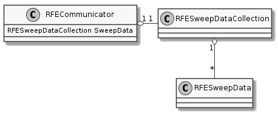

The RFECommunicator.SweepData property is an instance of a RFESweepDataCollection which aggregates instances of the RFESweepData.

RFESweepDataCollection |
In order to check whether or not new data has arrived you can check the Count attribute. Since it’s a count it’s 1-based, unlike an index. One thing you can do is call the Dump method to dump a CSV-like string to stdout. It lacks time-stamps and has some header information so it might need extra processing later on.
RFESweepDataCollection.Count |
Returns the total of elements with actual data allocated. |
RFESweepDataCollection.Dump() |
Dump a CSV string line with sweep data collection |
if (rf_explorer.SweepData.Count > last_index):
print(rf_explorer.SweepData.Dump())
last_index = rf_explorer.SweepData.Count
Instead of doing a CSV dump you can grab a data-set using the GetData method. To grab the last data-set decrement the current count by 1.
RFESweepDataCollection.Count |
Returns the total of elements with actual data allocated. |
RFESweepDataCollection.GetData(nIndex) |
Return the data pointed by the zero-starting index |
index = rf_explorer.SweepData.Count - 1
sweep_data = rf_explorer.SweepData.GetData(index)
The sweep_data will be an instance of RFESweepData.